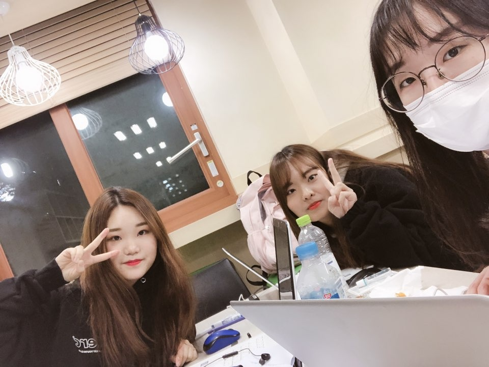
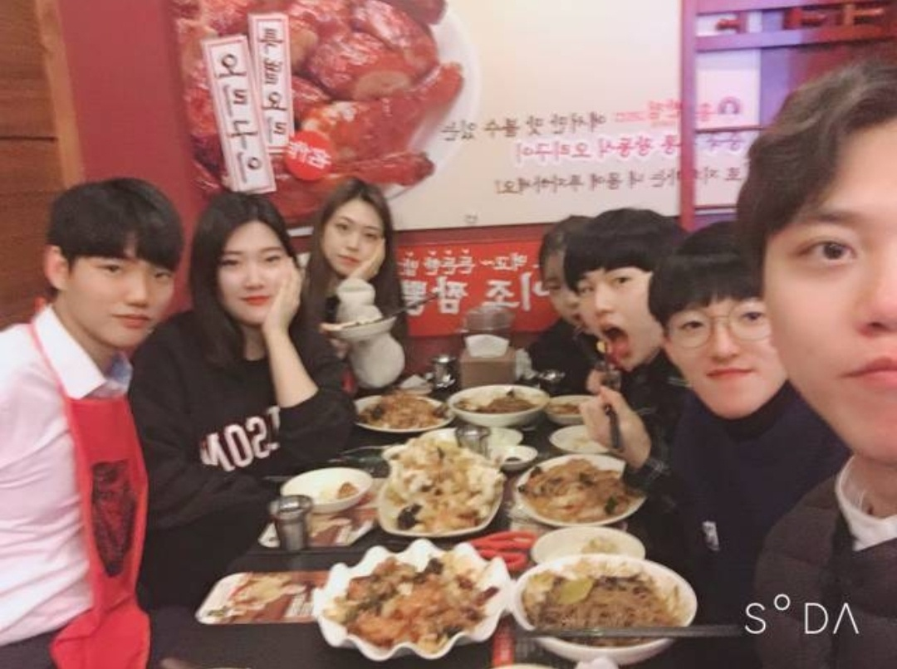
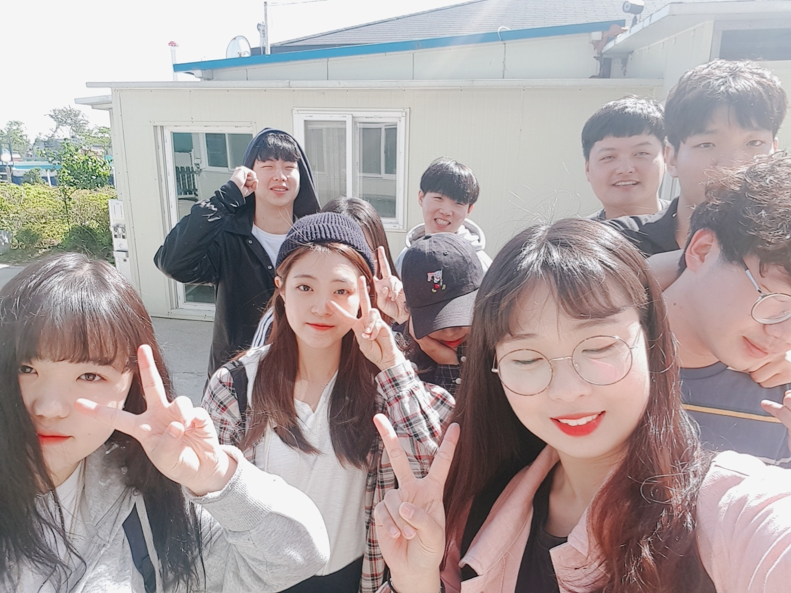

대학 활동 사진
- 2019년 1학기 고급프로그래밍(Java) 스터디그룹
- 2018년~2019년 컴퓨터공학부 전공소학회 DBNET 활동



참여 활동
- 2018년 1학기 컴퓨터공학부 LAB 튜터링 튜티
- 2018년 2학기 C언어, 웹 프로그래밍 스터디그룹
- 2018년 2학기 일본어능력시험 튜터링
- 2018년 겨울방학 문학기행
- 2019년 1학기 컴퓨터공학부 LAB 튜터링 C언어 튜터
- 2019년 1학기 고급프로그래밍(Java) 스터디그룹
- 2019년 1학기 일본어능력시험 튜터링
- 2019년 1학기 스포츠 여가생활 배드민턴
수강한 전공 강의 목록
- 프로그래밍 입문(C언어)
- 컴퓨터공학개론
- 미적분학
- 확률과 통계
- C 프로그래밍
- 웹 프로그래밍 기초
- 선형대수
- 이산수학
- 자료구조
- 고급 프로그래밍 (Java)
- 모바일 웹 프로그래밍
봉사
- 2011.7 농어촌 봉사활동
- 2012.8 취약계층 IT 방문교육서비스 참여
- 2014.3. 요양원 봉사활동
- 2014.4. 요양원 봉사활동
- 2014.5. 요양원 봉사활동
- 2014.6. 요양원 봉사활동
- 2014.7. 요양원 봉사활동
- 2014.9. 요양원 봉사활동
- 2014.10. 요양원 봉사활동
- 2014.11. 요양원 봉사활동
- 2014.12. 요양원 봉사활동
- 2015.3. 요양원 봉사활동
- 2015.4. 요양원 봉사활동
- 2015.5. 요양원 봉사활동
- 2015.6. 요양원 봉사활동
- 2015.7. 요양원 봉사활동
- 2015.9. 요양원 봉사활동
- 2015.10. 요양원 봉사활동
- 2015.11. 요양원 봉사활동
- 2015.12. 요양원 봉사활동
- 2016.3. 요양원 봉사활동
- 2016.4. 요양원 봉사활동
- 2016.5. 요양원 봉사활동
- 2016.6. 요양원 봉사활동
- 2016.7. 요양원 봉사활동
- 2016.8. 요양원 봉사활동
- 2017.5 유기견 봉사활동